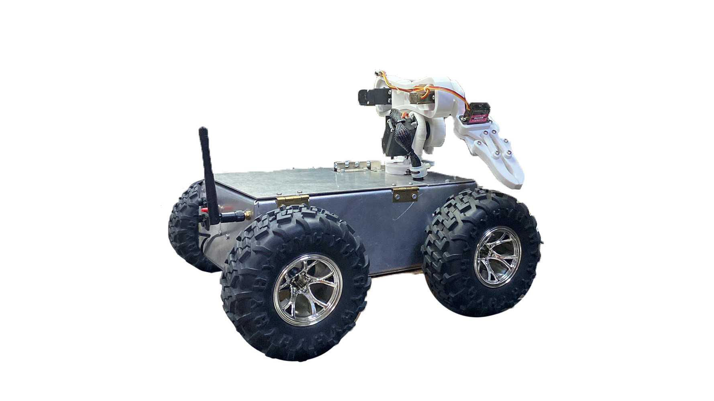
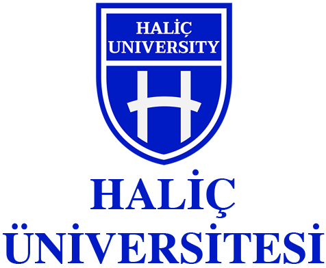

Fatih Mehmet ÖZÇELİK
Selman AKÇA
Bu proje, zorlu arazi koşullarında ve tehlikeli ortamlarda görev yapabilecek, uzaktan kontrol edilebilen 4x4 hareket kabiliyetine sahip bir robotik müdahale ve keşif aracı tasarlamayı ve üretmeyi amaçlamaktadır. Araç, robot kolu, Wi-Fi kamera ve anons hoparlörleri ile donatılmıştır. Operatör, tehlikeli bölgelere yaklaşmadan keşif ve müdahale gerçekleştirebilir.
Proje kapsamında kullanılan ileri teknoloji sensörler ve haberleşme sistemleri sayesinde, araç gerçek zamanlı görüntü aktarımı ve müdahale imkânı sunar. Zorlu arazi şartlarında yüksek hareket kabiliyeti ve dayanıklılığı ile dikkat çeker.
Bu proje, güvenlik ve afet yönetimi gibi kritik alanlarda insansız araçların kullanımını artırmayı hedeflemektedir. Araç, zorlu koşullarda güvenilir ve hızlı müdahale imkanı sunarak insan hayatını koruma ve riskleri azaltma konusunda önemli katkılar sağlamaktadır.
Geliştirilen 4x4 Robotik Müdahale ve Keşif Aracı, zorlu arazi koşullarında yüksek manevra kabiliyeti ve stabilite sağlayarak keşif ve müdahale operasyonlarında etkinlik kazandırmıştır. Uzaktan kontrol sistemleri ve entegre kamera modülü sayesinde, tehlikeli bölgelerde insan müdahalesine gerek kalmadan gerçek zamanlı veri aktarımı sağlanmıştır. Bu sayede afet ve güvenlik senaryolarında riskler minimize edilmiş, operasyon süreleri kısaltılmıştır. Ayrıca, modüler yapısı ve açık kaynak donanım kullanımı, ileride yapılacak geliştirmeler ve farklı görevler için adaptasyon kolaylığı sunmaktadır.
Proje kapsamında kullanılan gömülü sistemler ve robotik kollar, endüstriyel uygulamalarda da referans teşkil ederek teknoloji transferine zemin hazırlamıştır. Bu çalışma, yerel üniversite-sanayi iş birlikleri ve Ar-Ge kültürünün gelişimine katkı sağlayarak, robotik ve otomasyon alanında eğitim ve araştırma faaliyetlerinin yaygınlaşmasına olanak tanımıştır.
Araçta ESP32 tabanlı Wi-Fi kamera sistemi kullanılarak gerçek zamanlı yüksek çözünürlüklü görüntü aktarımı sağlanmaktadır. Arduino kontrollü robot kolu ile hassas ve programlanabilir müdahaleler yapılabilmektedir. 4x4 tahrik sistemi sayesinde araç, zorlu arazi koşullarında yüksek hareket kabiliyeti ve dayanıklılık göstermektedir.
Kablosuz haberleşme protokolleri aracılığıyla operatör, araçla kesintisiz iletişim kurabilir ve çevresel verileri anlık olarak izleyebilir. Ayrıca entegre sensörler sayesinde aracın konumu, hızı ve durum bilgileri güvenilir şekilde takip edilmektedir.
| Malzeme | Adet (Birim) | Fiyat (TL) |
|---|---|---|
| ESP32 Wi-Fi Modül / Antenli | 1 | 300 TL |
| 4 Kanal 5V Röle | 1 | 95 TL |
| XL 4015 5 Amper DC/DC Voltaj Regülatörü | 1 | 105 TL |
| XL 4015 5 Amper DC/DC Display Voltaj Regülatörü | 1 | 105 TL |
| 24 AWG Kablolar | 1 | 400 TL |
| Dişi ve Erkek Header | - | 70 TL |
| Makaron Kablo | - | 100 TL |
| 25mm 600 RPM DC Motor | 4 | 940 TL |
| M2 - M2,5 - M3 Vidalar ve Somunlar | - | 300 TL |
| 1.5mm 30x100cm Alüminyum (Araç Şasesi) | 1 | 500 TL |
| Arazi Aracı Tekerlek ve Bağlantı Kaplinleri | 4 | 2280 TL |
| MG996R Servo Motor | 3 | 925 TL |
| MG90S Servo Motor | 2 | 210 TL |
| 1,75mm PLA Filament / Robot Kol Baskısı | 1 | 250 TL |
| LM7805 Regülatör - AMS 1117 Regülatör | 1 - 1 | 30 TL |
| ESP32 Cam | 1 | 400 TL |
| L298N Motor Sürücü | 1 | 100 TL |
| Lityum - Polimer Batarya 3,7V 5 Hücre ve XT40 Konnektörler | 1 | 6000 TL |
| Delikli Pertinaks / Bakırlı | 1 | 175 TL |
| Dişi Jak - Mini Anahtar | 2 - 3 | 35 TL |
| 5v Mini Lazer | 1 | 30 TL |
| Malzeme | Adet (Birim) | Toplam Fiyat (TL) |
|---|---|---|
| ESP32 Wi-Fi Modül | 1 | 220 TL |
| Joystick 2 Eksen | 3 | 75 TL |
| Push Buton / Renkli | 6 | 60 TL |
| Li-on 18650 Pil | 1 | 250 TL |
| LM7805 Regülatör | 1 | 10 TL |
| AMS 1117 Regülatör | 1 | 20 TL |
| 1,75mm PLA Filament / Verici Kumanda Baskısı | 1 | 200 TL |
| 14,185 TL | ||
Öğr. Gör. Erdem ŞANLI
Dr. Öğr. Üyesi Fatma KOSOVALI ÇAVUŞ
Öğr. Gör. İrfan ERDEM
T.C. Haliç Üniversitesi Meslek Yüksekokulu Elektronik Teknolojisi Bölümü
2005 yılında İstanbul’da doğdu. İlköğrenimini Atışalanı İlkokulu’nda, ortaöğrenimini Atışalanı Ortaokulu’nda tamamladı. Lise eğitimini Özel İkitelli OSB Mesleki ve Teknik Anadolu Lisesi’nde tamamladı. Haliç Üniversitesi Meslek Yüksekokulu Elektronik Teknolojisi Bölümü’nde öğrenimine devam etmektedir. Elektronik sistemler, haberleşme teknolojileri, robotik teknolojiler ve mikrodenetleyici tabanlı projeler üzerine çalışmalar yapmaktadır.
2005 yılında İstanbul’da doğdu. İlköğrenimini Tahsin Banguoğlu İlkokulu’nda, ortaöğrenimini TOKİ İmam Hatip Ortaokulu’nda tamamladı. Lise eğitimini Ayhan Arı Borsa İstanbul Mesleki ve Teknik Anadolu Lisesi’nde tamamladı. Haliç Üniversitesi Meslek Yüksekokulu Elektronik Teknolojisi Bölümü’nde öğrenimine devam etmektedir. Robotik sistemler, mikrodenetleyici tabanlı ve elektronik devreler konularına ilgi duymaktadır.
- İki öğrenci de “4x4 Robotik Müdahale ve Keşif Aracı” başlıklı bitirme projesi kapsamında birlikte çalışarak, teorik bilgilerini uygulamalı bir projede hayata geçirmiştir.
Bu projenin gerçekleştirilmesinde bilgi ve deneyimlerini bizlerle paylaşan danışmanımız Öğr. Gör. Erdem ŞANLI’ya, değerli jüri üyelerimiz Dr. Öğr. Üyesi Fatma KOSOVALI ÇAVUŞ ve Öğr. Gör. İrfan ERDEM’e teşekkürü borç biliriz.
İstanbul - 2025